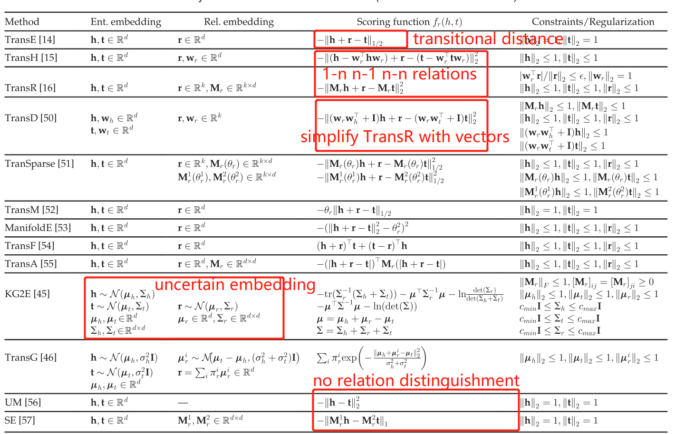
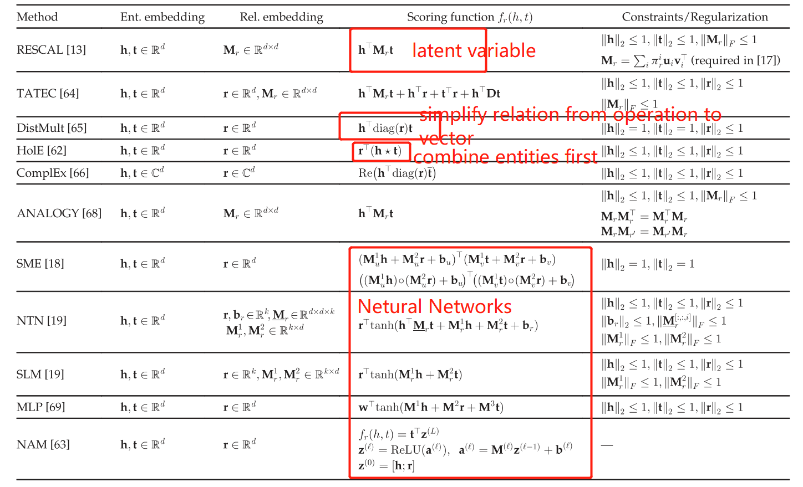

516 words in total, 2 minutes required. 图谱实践笔记第四篇：OpenKE 清华大学自然语言处理实验室近日发布了 OpenKE 平台，整合了 TransE、TransH、TransR、TransD、RESCAL、DistMult、HolE、ComplEx 等算法的统一接口高效实现，以及面向 WikiData 和 Freebase 预训练知识表示模型 [1]。 拥有配置多种训练环境和经典模型的简易接口； 对高性能 GPU 训练进行加速和内存优化； 高效轻量级的 C++实现，用于快速部署和多线程加速； 项目链接：http://openke.thunlp.orgGitHub：https://github.com/thunlp/OpenKE 数据集数据集有以下五种格式： train.txt：训练文件，每行以 (e1, e2, rel) 格式书写，第一行是三元组的数量； valid.txt：验证文件，和 train.txt 格式一样； test.txt：测试文件，和 train.txt 格式一样； entity.txt：所有的实体和对应的 id，每行一个实体及其 id； relation2id.txt：所有的关系和对应的 id，每行一个关系及其 id。 工具包基于 TensorFlow 的知识表示学习（KRL）的高效实现。使用 C++实现了一些基础操作，如数据预处理和负采样。每一个特定的模型都用 TensorFlow 和 Python 接口实现，因此能方便地在 GPU 上运行模型。OpenKE 提供了训练和测试多种 KRL 模型的简易接口，无需在冗余数据处理和内存控制上花费太多功夫。OpenKE 实现了一些经典和高效的模型用于支持知识表示学习，这些模型包括： TransE http://papers.nips.cc/paper/5071-translating-embeddings-for-modeling-multi-relational-data.pdf TransH https://www.aaai.org/ocs/index.php/AAAI/AAAI14/paper/viewFile/8531/8546 TransR https://www.aaai.org/ocs/index.php/AAAI/AAAI15/paper/viewFile/9571/9523/ TransD http://anthology.aclweb.org/P/P15/P15-1067.pdf RESCAL http://www.icml-2011.org/papers/438_icmlpaper.pdf DistMult https://arxiv.org/pdf/1412.6575.pdf HolE https://www.aaai.org/ocs/index.php/AAAI/AAAI16/paper/viewFile/12484/11828 ComplEx http://proceedings.mlr.press/v48/trouillon16.pdf KBE算法Distance-based Methods (TransE family)Distance based Methods Semantic-based Methods (RESCAL family)Semantic based Methods 扩展阅读1.https://www.jiqizhixin.com/articles/2017-11-04-2. ↩ ← Previous Post Next Post→ Table of Contents 数据集工具包KBE算法Distance-based Methods (TransE family)Semantic-based Methods (RESCAL family)扩展阅读